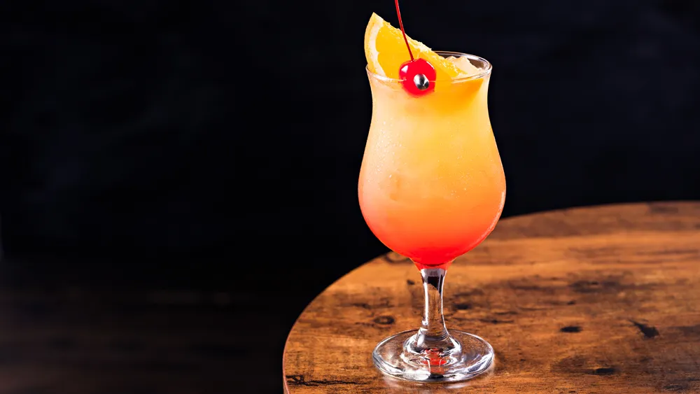

Odin Recipes
Hurricane Cocktail

Description
The hurricane cocktail is a sweet alcoholic drink made with rum, lemon juice, and either passion fruit syrup or fassionola. It is one of many popular drinks served in New Orleans. It is traditionally served in the tall, curvy eponymous hurricane glass.
Ingredients
- 2 ounces light rum
- 2 ounces dark rum
- 1 ounce lime juice, freshly squeezed
- 1 ounce orange juice, freshly squeezed
- 1/2 ounce passion fruit syrup
- 1/2 ounce simple syrup
- 1 teaspoon grenadine
- Garnish: orange half-wheel
- Garnish: preserved cherry
Steps
- Add the light and dark rums, lime and orange juices, passion fruit puree, simple syrup and grenadine into a shaker.
- Add some ice and shake until well-chilled.
- Strain into a large Hurricane glass over fresh ice.
- Garnish with an orange half-wheel and a preserved cherry.
- Enjoy your drink.
Check out these recipes!